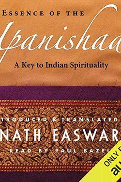

Library › Self-Improvement
The Upanishads — Summary & Key Lessons

The end of the Vedas — India's oldest dialogues on the self, the universe and what is truly yours.
📖 OPEN THE FULL INTERACTIVE BREAKDOWN →🌐 Read it in Hindi, Hinglish, Gujarati, Tamil & 22 more languages — free, with audio.
💡 The Big Idea
The Upanishads are the philosophical summit of the Vedas, composed as dialogues between teachers and seekers. Their central insight is 'Tat tvam asi' — 'thou art that': the individual self (atman) and the ground of reality (brahman) are not two. Every Upanishadic argument is an attempt to shake the student out of identification with the small self and into the knowledge of the infinite — not as belief, but as direct experience.
🧠 The 10 Key Lessons
Lesson 1: The Two Selves
Katha Upanishad: The Chariot
The Katha Upanishad uses a chariot: the body is the chariot, the senses are the horses, the mind is the reins, the intellect is the driver, and the self is the master passenger. Most people live in the horses. The teaching's modern force: you are not your thoughts, emotions or body — you are the one observing them.
📖 Example: In an argument, the person who can watch their own anger rising has found the master passenger. Read the full example →
⚡ Do this: Three times today, pause and note: 'I am the one watching this thought.'
Lesson 2: The Deep Desire Principle
Chandogya Upanishad: The Heart
'You are what your deep driving desire is' — one of the most consequential lines in the text. Life arranges itself around the dominant desire; change the desire and you change the person, because character is desire in motion. The Upanishads do not condemn desire; they ask you to choose it consciously.
📖 Example: The student whose dominant desire is mastery vs. the one whose dominant desire is the grade — the first compounds, the second burns. Read the full example →
⚡ Do this: Write your current dominant desire in one sentence; ask if you'd be proud of it as your life's theme.
Lesson 3: Tat Tvam Asi
Chandogya Upanishad: The Teaching
The famous formula — 'thou art that' — is taught with the metaphor of salt dissolved in water: you cannot grasp the self by pointing at it, yet it pervades everything. The practical claim is that the sense of separation is the illusion, and the experience of unity is available — not through belief but through sustained inquiry and meditation.
📖 Example: The moment of deep connection with a child, a stranger, a sunset — the boundary dissolving — is a taste of the teaching. Read the full example →
⚡ Do this: In one ordinary moment daily, look for the boundary between you and the world — and question it.
Lesson 4: The World Is a Classroom
Isha Upanishad: Action
The Isha Upanishad opens with the whole world as a dwelling of the divine and then delivers a stunning instruction: 'enjoy through renunciation — do not covet.' Meaning: participate fully in life while holding it loosely. Worldly action and spiritual freedom are not enemies; the unattached worker is the ideal student.
📖 Example: A parent who loves and serves the family without possessing them has understood the Isha's first verse. Read the full example →
⚡ Do this: Enjoy something fully today — without needing it, clinging to it, or keeping score of it.
Lesson 5: Fear Dies With the False Self
Mundaka/Brihadaranyaka: Fearlessness
The Upanishads repeat: where there is otherness, there is fear; where there is unity, there is no fear. Fear is the emotion of separation — of the threatened small self. When identification shifts, fear loses its object. This is the deep answer to anxiety: not courage, but clarity about what you are.
📖 Example: Fear of losing a job lives in the identity 'I am my job'; the one who is not only the job faces the same risk without the same terror. Read the full example →
⚡ Do this: Write the three things you fear losing, and beside each, who you would be without it.
Lesson 6: The Inner Controller: The Self Within
The Katha and Chandogya Upanishads
The Upanishads' vision of the antaryamin: the Self that dwells within as the inner ruler of all — the unseen driver behind breath, mind and will. You say 'I breathe,' but the breath runs itself; you say 'I think,' but thoughts arise unbidden. Find the witness of these processes and you have touched the Inner Controller that the sages say is one in all beings.
📖 Example: Watch your breath for one minute without touching it — it inhales, exhales, pauses. You are not doing this; something in you is watching it happen. Read the full example →
⚡ Do this: One minute of pure observation of breathing daily — and each time, notice the silent watcher, not the breath.
Lesson 7: The Two Birds: Body and Self
The Mundaka Upanishad, 3.1
The Mundaka's most beloved image: two birds on the same tree — one eats the sweet and bitter fruit (the body-mind, experiencing pleasure and pain), the other watches without eating (the Self, untouched). Suffering belongs to the eating bird; freedom is the shift of identification from the eater to the watcher.
📖 Example: When an insult lands, two things happen: the body-mind burns and someone notices the burning. The noticing self never burned — that is the second bird. Read the full example →
⚡ Do this: When the next pleasure or pain arrives, say silently: 'the second bird is watching' — and locate the watcher.
Lesson 8: The Guest in the House
The Katha Upanishad: The Body as Guesthouse
The Katha Upanishad's image is startlingly modern: the body is a guesthouse where the self is the guest — arriving, staying briefly, departing. Because the guest knows the stay is temporary, he enjoys the rooms without clinging and leaves without grief. Death stops being the enemy the moment identity moves from the house to the guest; the teaching is not morbid, it is liberating.
📖 Example: A traveller in a hotel does not fight the checkout; the man who thinks the hotel is home fights it forever. Read the full example →
⚡ Do this: Tonight, once: 'This body is a guesthouse; I am the guest.' Notice what loosens.
Lesson 9: The Two Birds
The Mundaka Upanishad: The Bird and Its Shadow
Two birds sit on the same tree: one eats the sweet and bitter fruits, the other merely watches. The eating bird is the personal self, tasting every experience; the watching bird is the awareness that never changes. The Upanishad's promise: when the eating bird turns and recognises the watcher as itself, the sorrow ends — not because fruits stop coming, but because the taste is finally seen as a passing weather on a still sky.
📖 Example: The same rain soaks the wanderer and merely passes the mountain; the mountain is not less alive, only less disturbed. Read the full example →
⚡ Do this: Observe one pleasure and one pain this week from the second bird's seat: 'I am the one watching this.'
Lesson 10: The Rope and the Snake
The Vedanta Teaching: Adhyaropa-Apavada
A classic Vedanta image: at dusk you see a rope and scream 'snake!'. The snake is real to you — your pulse, your plan, your escape — until light shows the rope. The fear was not imaginary; the snake was false. So with fears and identities: the terror is real, the object is not. Liberation is not denying experience; it is bringing light until the mistaken shape dissolves.
📖 Example: A shadow in a dark room freezes a child; a switch flips and the same child laughs. Nothing changed but the light. Read the full example →
⚡ Do this: Take the thought that scares you most and ask: 'What would this look like in full daylight? What am I actually seeing?'
✅ 5-Step Action Plan
- Pause thrice daily: 'I am the one watching this thought.'
- Write and own your one dominant desire sentence.
- Daily: question the boundary between you and the world.
- Enjoy fully today, holding nothing possessively.
- List three fear-objects — and who you are without them.
⚠️ When This Doesn't Work
These are 2,500-year-old dialogues with metaphysics that cannot be empirically settled; translations differ widely and Easwaran's is one view. If the cosmic unity claim is too much, the psychology — desire, identity, fear — still stands.
💀 The Graveyard Proves It
🏺 The Harappan Collapse — The Advanced Civilization That Vanished Into Its Own Success. Burn: A civilization of a million people — cities, writing, trade — gone without a single war Read the full case study →
💬 Best Quotes from The Upanishads
- “Lead me from the unreal to the real; lead me from darkness to light.”
- “You are what your deep driving desire is — as your desire is, so is your will; as your will is, so is your deed.”
- “That which is the finest essence — the whole world has that as its soul. That is reality; that is the self; that art thou.”
Interactive version: mark lessons as read, listen in your language, share quote cards.